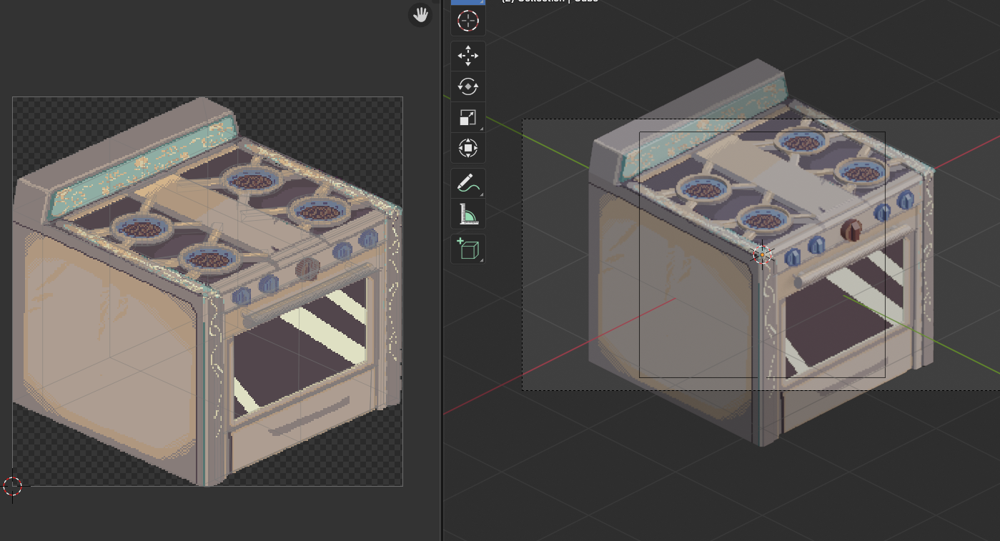
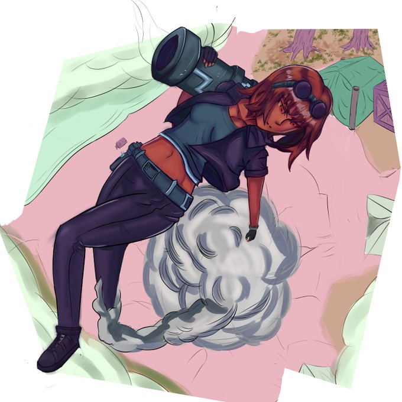
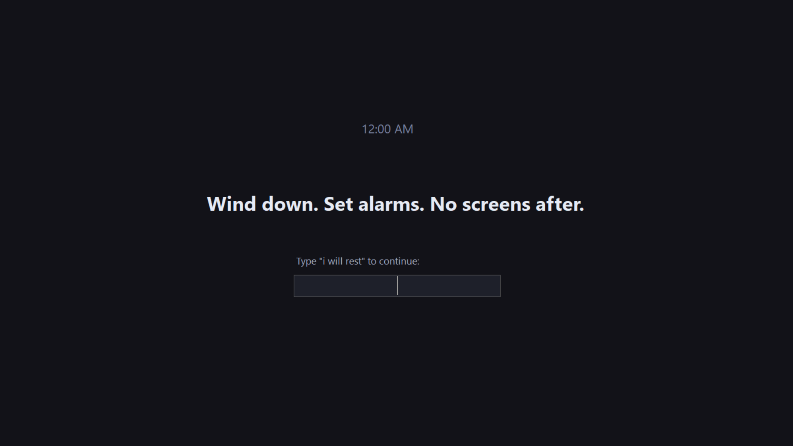
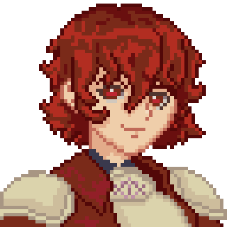

Pixel art is my primary medium, and it's visible throughout the rest of this portfolio. Character sprites, UI elements, in-world assets, and the visual identity of From The Hearth as a whole.
For 3D work I use Blender, specifically as part of a pipeline I've developed: I model low-poly isometric geometry, then project pixel art textures onto it. The result reads as a 2D pixel sprite from a fixed angle, but it's sitting on actual 3D geometry. To allow for camera rotation, I've built a mesh-swapping system in Unity that switches between pre-rendered projections from different angles mid-rotation so the object always presents the correct pixel-art face to the camera while remaining fully rotatable in 3D space.
I also do digital illustration outside of pixel art, though it's a less practiced domain. I've recently begun learning music composition as well, mostly by transcribing pieces I like as a starting point.

My primary language is C#, used through Unity for game development. The systems described across this portfolio, the inspiration economy, NPC progression, the cooking menu, are all implemented or prototyped in C#. I'm comfortable with Unity's component model, editor tooling, and building gameplay systems from scratch.
The 'Indie Quest' course I attended in Sweden had us learn to build games from the ground up using only the C# console before we moved on to Unity. Having a mindset that builds logic separate to game development has helped me be able to solve problems for myself as well, for example- to meet the deadlines for this application, I built a small WinForms program to hijack my screen and deliver alarms I can't ignore to make sure I'm following schedule. I'm not just interested in games coding, I'll regularly be trying to make useful software for myself going forwards.

I had already worked with HTML, CSS, and Javascript prior to working on this portfolio, but I've learned quite a bit making it as my first larger web project.
I also have a growing interest in how large language models function at a structural level, particularly the potential for grammar-based generation systems, such as GNFB grammars, to power procedural narratives or event selection in games. The idea of an LLM operating as a constrained storyteller within authored rule-sets is something I find compelling as a design problem. It's a theoretical interest at this stage, but one I intend to pursue practically with all the necessary ethical considerations to ensure the research isn't intensely resource-intensive. Additionally, I'm only interested in how these tools can help us create mechanics that otherwise wouldn't exist, rather than using them to replace parts of the process we can already manage.
I run and play tabletop RPGs regularly, which has shaped how I think about narrative, character motivation, and collaborative world-building. Most of my writing exists inside living game worlds rather than standalone fiction.
The most concrete example: Aphros, the faction referenced in the From The Hearth narrative section, is lore I originally wrote for Chronicles of Eternia: Meranthe, a persistent BYOND Engine roleplay-enforced game server with around 100-200 concurrent players and over a decade of accumulated worldbuilding. The faction still has an active playerbase. Because I wrote it, I have permission to carry it into my own work.
Chronicles of Eternia — relevant lore pages:
→ Aphros — the kingdom and its founding philosophy
→ Athelios — the patron deity; god of duality.
→ The Faceless — the shapeshifting intelligence agency that built the kingdom from the inside
Writing for a live world with real players means your lore has to be legible, internally consistent, and interesting enough that people actually build characters around it. It's a different discipline from writing fiction in isolation, closer to game writing than authorship.
